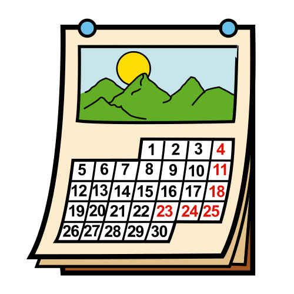
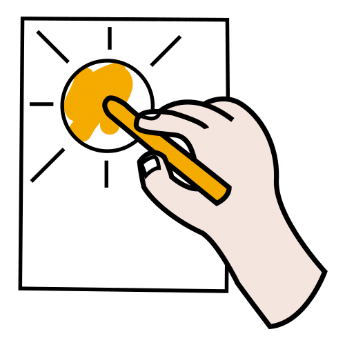
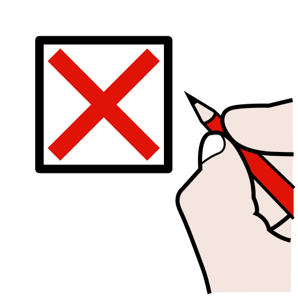
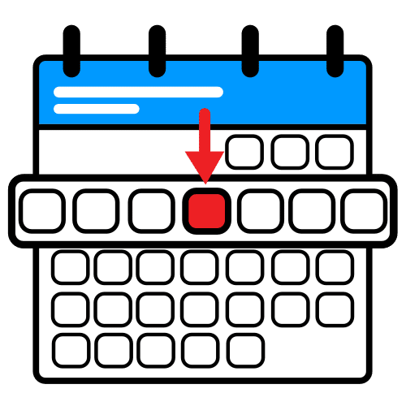
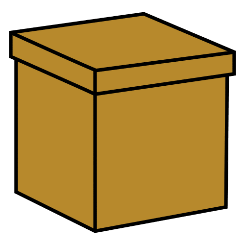
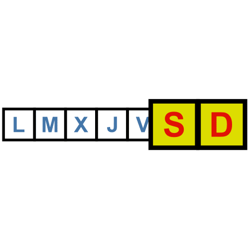
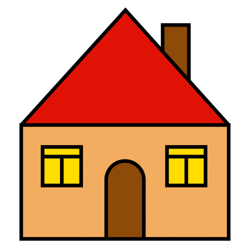
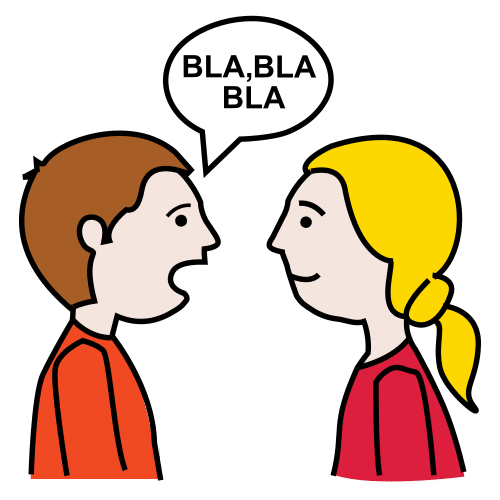
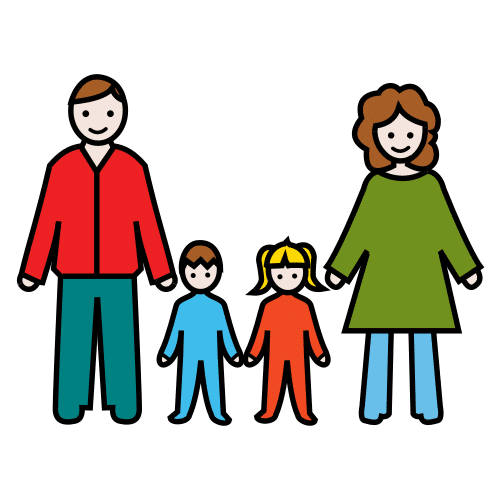

Juego · Convivencia, emociones y autonomía
Un reto amable para cada día de clase hasta las vacaciones, en tres niveles y con pictogramas.
Pictogramas: Sergio Palao. ARASAAC (Gobierno de Aragón). CC BY-NC-SA.
Licencia CC BY-NC-SA 4.0
ideducando.es
Antes de empezar
Cada día de clase, la clase hace un reto corto: de convivencia, de emociones, de autonomía, de lenguaje o de movimiento. Todo el grupo hace el mismo reto, y cada peque elige cómo hacerlo. Lleva cinco minutos.
1Con mucho apoyo. Lo hace con un adulto, que le enseña cómo y le ayuda. Vale responder con un gesto, señalando o con su tablero de comunicación.
2Con algo de apoyo. Le basta una pista, un ejemplo o una pregunta.
3Sin apoyo. Lo hace solo o sola y, a veces, lo enseña a los demás.
Los niveles describen la tarea, nunca al niño o la niña. Cada día se puede cambiar de nivel.
Para el docente · Para planificar y anotar
Elige los que encajen con tu grupo y apunta el día en que hacéis cada uno. Los que no os dé tiempo, guardadlos para enero. Las dos tarjetas en blanco son para los retos que invente la clase.
| N.º | Familia | Reto | Día | Hecho |
|---|
Pictogramas: Sergio Palao. Origen: ARASAAC (arasaac.org). Licencia CC BY-NC-SA. Propiedad: Gobierno de Aragón.

Para la pared de la clase

Reto hecho: coloreamos el dibujo.
Sin cole: tachamos el día.Pictogramas: Sergio Palao. Origen: ARASAAC (arasaac.org). Licencia CC BY-NC-SA. Propiedad: Gobierno de Aragón. Dibujos para colorear: IdEducando
Para cada peque
Me llamo
Pictogramas: Sergio Palao. Origen: ARASAAC (arasaac.org). Licencia CC BY-NC-SA. Propiedad: Gobierno de Aragón. Dibujos para colorear: IdEducando.

El reto de hoyHoy es
¿Cómo lo hago hoy?
Después, coloreamos el día en el calendario.
Pictogramas: Sergio Palao. Origen: ARASAAC (arasaac.org). Licencia CC BY-NC-SA. Propiedad: Gobierno de Aragón.
Tarjetas en blanco y tiras · Para los retos que invente la clase y para señalar. Plastifica y recorta
Pictogramas: Sergio Palao. Origen: ARASAAC (arasaac.org). Licencia CC BY-NC-SA. Propiedad: Gobierno de Aragón.
Versión opcional · Para el centro que celebra el Adviento

Día de cole: el reto de la clase.
Fin de semana o fiesta: un reto en casa.Del 1 al 24 de diciembre: cada día, coloread su ventana. Los retos para casa están en la nota para las familias (página ). Pictogramas: Sergio Palao. Origen: ARASAAC (arasaac.org). Licencia CC BY-NC-SA. Propiedad: Gobierno de Aragón. Corona y dibujos: IdEducando.
Para el último día antes de las vacaciones
Me llamo
Para el adulto: puede dibujar, pegar la foto de la tarjeta o escribir el número del reto. Si señala, anota tú lo que elige y rodea la cara que te indique.
Pictogramas: Sergio Palao. Origen: ARASAAC (arasaac.org). Licencia CC BY-NC-SA. Propiedad: Gobierno de Aragón.
Para las familias
Este mes, cada día de clase hacemos un reto corto. Hay retos para convivir, para hablar de cómo nos sentimos, para hacer cosas sin ayuda, para hablar y para movernos.
Sacamos una tarjeta de una caja. Todo el grupo hace el mismo reto, y cada peque elige cómo: con mucho apoyo, con algo de apoyo o sin apoyo. Después coloreamos el día en el calendario.

No hace falta traer nadaNingún reto lleva comida ni cosas de casa. No tenéis que comprar nada.

En casa podéis preguntar«¿Qué reto has hecho hoy?». Si no lo cuenta con palabras, puede señalar o enseñaros cómo lo ha hecho.

Retos para hacer en casaPara los fines de semana y los días de fiesta, si os apetece:
Algunos coles usan una versión de Adviento, con una ventana para cada día hasta el 24. Es opcional. Los días sin cole, podéis hacer en casa uno de estos retos.
Retos de diciembre en tres niveles. IdEducando, noviembre de 2026. Licencia CC BY-NC-SA 4.0. Los símbolos pictográficos utilizados son propiedad del Gobierno de Aragón y han sido creados por Sergio Palao para ARASAAC (https://arasaac.org), que los distribuye bajo Licencia Creative Commons BY-NC-SA.
Guía para el docente
Diciembre trae ensayos, fiestas y ganas de vacaciones. Estos retos dan a cada día de clase un momento corto y amable para convivir, poner nombre a lo que se siente, hacer cosas sin ayuda, hablar y moverse. Toda la clase hace el mismo reto a la vez, y cada peque elige su nivel.
Depende del año, de la comunidad autónoma y del municipio. Escribe en el calendario el número de cada día con clase hasta las vacaciones y tacha los demás. En diciembre de 2026, el lunes 7 y el martes 8 son festivos en toda la Región de Murcia (Boletín Oficial del Estado, BOE, 2025). Las vacaciones y los días no lectivos de cada municipio están en el calendario escolar del curso, en el Boletín Oficial de la Región de Murcia (BORM). Con 20 retos y dos en blanco puedes elegir y guardar alguno para enero.
El Diseño Universal para el Aprendizaje (DUA) propone pensar desde el principio en toda la clase. Una de sus pautas es «Ofrecer opciones con distintos niveles de complejidad o dificultad» (CAST, 2024, consideración 8.2). Aquí, cada reto tiene tres:
Los niveles describen la tarea, nunca al niño o la niña, y cada día se puede cambiar. Dejar elegir es otra pauta del DUA: «Optimizar la elección y la autonomía» (consideración 7.1).
El material de base sirve para cualquier centro y cualquier familia, crea lo que crea. La Convención sobre los Derechos del Niño pide respetar «el derecho del niño a la libertad de pensamiento, de conciencia y de religión» (art. 14). Si tu centro celebra el Adviento, usa el calendario de la página , con una ventana para cada día del 1 al 24 y una corona con una vela para cada semana.
En Infantil, conecta con saberes del currículo de la Región de Murcia (Decreto 196/2022, BORM n.º 255): «Progresiva autonomía en la realización de tareas» y «Estrategias de ayuda y cooperación en contextos de juego y rutinas» (pág. 33084); «Fórmulas de cortesía e interacción social positiva. Actitud de ayuda y cooperación» (pág. 33085); «Repertorio comunicativo y elementos de comunicación no verbal» (pág. 33108), y «La poesía y los juegos de palabras como elementos de aprendizaje y disfrute» (pág. 33109).
Fuentes y créditos
Retos de diciembre en tres niveles. Equipo IdEducando, noviembre de 2026. ideducando.es/material-gratuito/retos-diciembre. Fuentes consultadas entre el 5 y el 8 de noviembre de 2026. Los retos y sus niveles son una propuesta de IdEducando.
Los pictogramas son de ARASAAC, el Centro Aragonés para la Comunicación Aumentativa y Alternativa. Su licencia pide citar este texto: «Los símbolos pictográficos utilizados son propiedad del Gobierno de Aragón y han sido creados por Sergio Palao para ARASAAC (https://arasaac.org), que los distribuye bajo Licencia Creative Commons BY-NC-SA». Los dibujos para colorear, la corona, el calendario de la portada y las estrellas son de IdEducando.
Como todo lo que lleva pictogramas de ARASAAC, este material es gratis y lo será siempre. Licencia CC BY-NC-SA 4.0: puedes copiarlo y adaptarlo citando a IdEducando, sin fines comerciales y con la misma licencia.